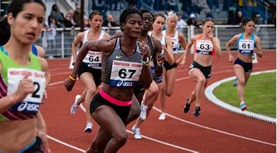

"Crescimento e Empoderamento: O Esporte Feminino ganha destaque e quebra barreiras"
POR JUnior JUnior
Publicado em 28/06/2023
Nos últimos anos, o esporte feminino tem conquistado um espaço cada vez maior e mais significativo, mostrando um crescimento notável e promovendo o empoderamento das mulheres no cenário esportivo. Com talento, determinação e superação de desafios, as atletas têm inspirado pessoas ao redor do mundo, deixando um legado duradouro e quebrando barreiras de gênero.
Em diferentes modalidades esportivas, as mulheres têm se destacado e alcançado resultados extraordinários. No futebol, por exemplo, a popularidade do esporte entre as mulheres tem aumentado significativamente, com equipes nacionais e clubes investindo em estruturas profissionais e competições de alto nível. A conquista de títulos e a participação em grandes torneios internacionais têm proporcionado visibilidade e reconhecimento para as jogadoras, impulsionando o interesse e a valorização do futebol feminino.
Além do futebol, outras modalidades esportivas também têm presenciado um avanço notável do esporte feminino. No basquete, no vôlei, no tênis, na natação, no atletismo e em tantas outras disciplinas, as mulheres têm brilhado em competições de renome mundial, estabelecendo recordes, conquistando medalhas e inspirando gerações futuras de atletas.
O impacto do esporte feminino vai além das conquistas dentro de campo. A representatividade e o empoderamento das mulheres no esporte têm influenciado a sociedade como um todo, estimulando o rompimento de estereótipos de gênero e incentivando a igualdade de oportunidades. As atletas se tornam modelos e referências para meninas e jovens, mostrando que não há limites para o que podem alcançar.
Os esforços para promover o esporte feminino têm sido fundamentais. Investimentos em infraestrutura esportiva, apoio financeiro e incentivos para a participação e desenvolvimento das atletas têm contribuído para a evolução do cenário esportivo feminino. Além disso, campanhas de conscientização e programas de empoderamento têm se mostrado eficazes na quebra de barreiras e na promoção de uma cultura inclusiva no esporte.
Embora ainda haja desafios a serem superados, o futuro do esporte feminino é promissor. A conscientização sobre a importância da igualdade de gênero e a valorização das conquistas das mulheres no esporte têm impulsionado mudanças significativas. A busca por uma representação equilibrada e justa nas competições, nos patrocínios e na mídia esportiva é fundamental para garantir a continuidade desse movimento de crescimento e empoderamento das mulheres no esporte.
O esporte feminino segue em ascensão, reafirmando a importância do talento, da determinação e da força das mulheres. À medida que mais oportunidades são criadas e mais vozes são ouvidas, as atletas continuam a abrir caminho para um futuro mais igualitário e inclusivo no mundo esportivo. O esporte feminino é um exemplo poderoso de superação e inspir